Android 修正后同宽对照
2026-11-11 · 36 种组件 / 37 个样例 / 74 组浅深色对照。每张图左原站、右修正后的 Android。可点击行保留独立 48 dp 命中区域。
修正内容与剩余差异
Chain of Thought
保持原有结构；48 dp 展开入口仍把正文下推，网页最小高度吸收了部分总高差值。
360 同宽画布 · Android 297.5 → 297.5 · 原站 288.0
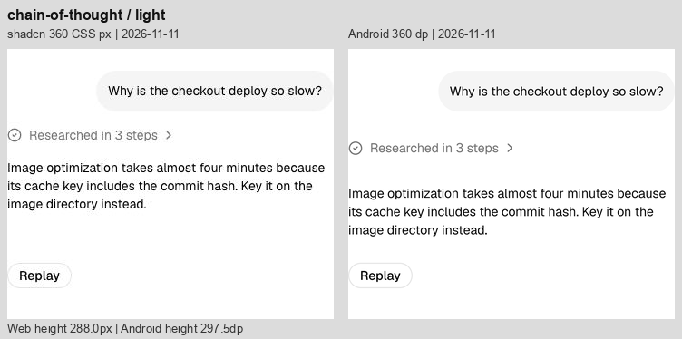
Chat
附件、发送、重置圆底改为 32；压缩输入区多余内距。空态仍略偏上，标题说明间距仍有细差。
360 同宽画布 · Android 800.0 → 800.0 · 原站 800.0
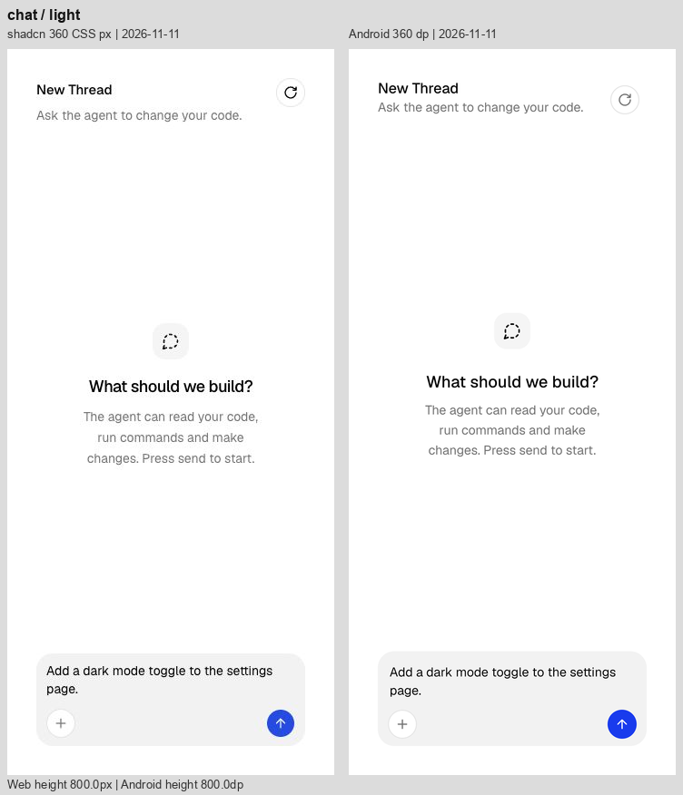
Checkpoint
状态文字从 12 sp 调到 14 sp。Restore 保留独立触控范围，中间分隔区和第二组消息仍比网页更低。
360 同宽画布 · Android 290.7 → 290.7 · 原站 288.0
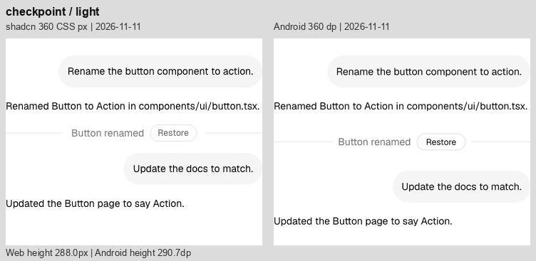
Confirmation 初始态
按钮外观接近；48 dp 命中范围使可见按钮在画布内的位置仍略不同。
360 同宽画布 · Android 288.0 → 288.0 · 原站 288.0

Confirmation 待审批
标签字形与行盒已统一。说明列仍较窄，审批按钮与展开入口保留原生触控尺寸；未声称此面板已对齐。
360 同宽画布 · Android 332.2 → 327.6 · 原站 288.0
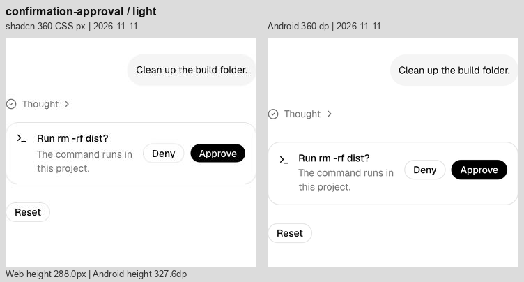
Context
胶囊外观接近；48 dp 命中范围导致示例高出 20。
360 同宽画布 · Android 144.0 → 144.0 · 原站 124.0
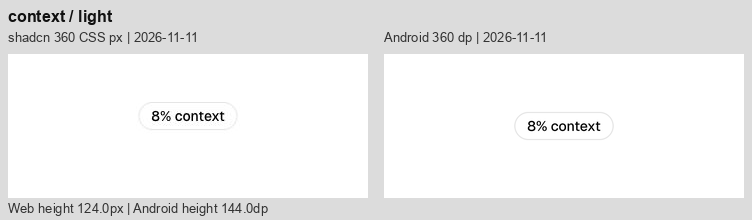
File Tree
修正文件夹左内距和浅色选中底色；内宽保持 320。7 个可点击行仍为 48，网页为 28，因此总高仍多 140。
360 同宽画布 · Android 384.0 → 384.0 · 原站 244.0
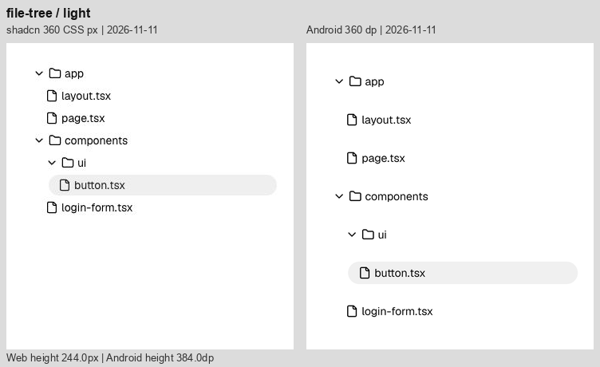
Inline Citation
修正徽标字重、内距、24 高占位和底色；第二段 Server Components 与 react.dev 的换行现已接近原站。仍有基线与总高细差。
360 同宽画布 · Android 369.5 → 369.5 · 原站 374.0
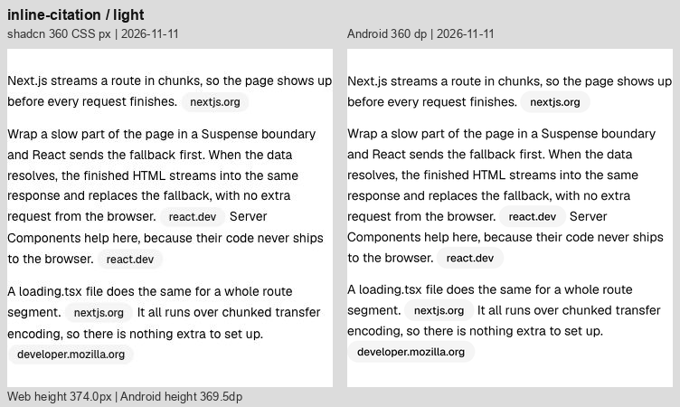
Message
行内代码增加独立圆角和内距，按正文 90% 字号显示；长代码可换行并保留可读文本。减少代码正文上方留白，工具栏和复制按钮仍占 48 dp。
360 同宽画布 · Android 463.6 → 459.8 · 原站 434.2
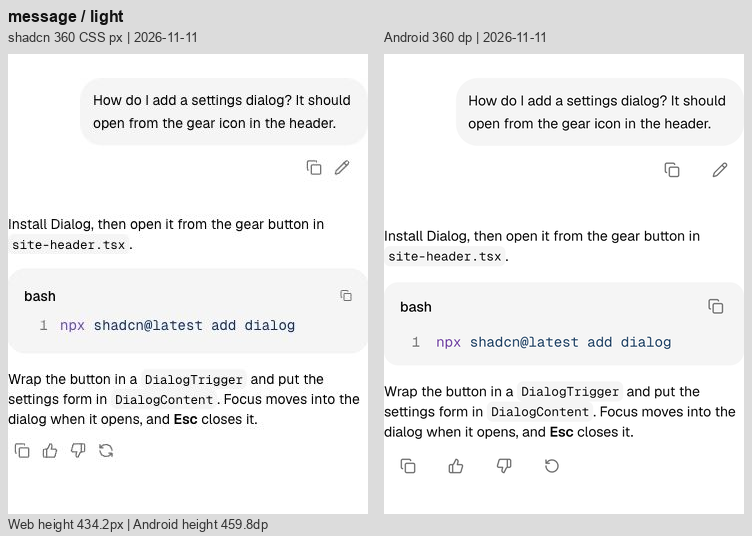
Model Selector
模型与 Effort 胶囊、附件/发送圆底改为 32；调整文字边距、胶囊间距和右对齐。大字号下可换行且点击区不重叠。
360 同宽画布 · Android 160.4 → 160.4 · 原站 160.0

Plan
保持步骤层级与静态行间距；展开标题和 Replay 仍保留原生触控留白。
360 同宽画布 · Android 409.1 → 409.1 · 原站 367.5

Prompt Input
修正文字内距、32 高控件、工具栏位置与胶囊间距；整体 160.4 对比网页 160。
360 同宽画布 · Android 160.4 → 160.4 · 原站 160.0

Queue
去掉 4 个点击行之间重复的 8 dp 间隔，共减少 24；每行仍有独立 48 dp 命中区，边界点击测试通过。
360 同宽画布 · Android 497.5 → 473.5 · 原站 344.8
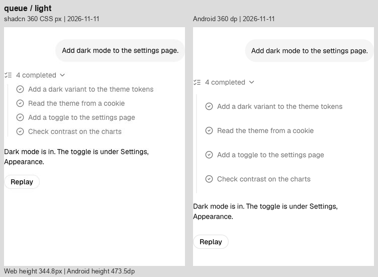
Reasoning
正文、标题与结构保持；段落行距和入口留白仍不同，不能只看总高判断一致。
360 同宽画布 · Android 438.9 → 438.9 · 原站 417.2
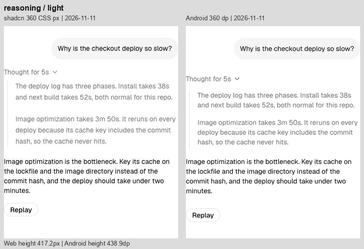
Sources
去掉来源行间重复间隔，共减少 16；内容左缩进调为 24；行对齐仍有细差，可点击行仍高于原站。
360 同宽画布 · Android 464.4 → 448.4 · 原站 339.5

Stack Trace
去掉多余行间距，修正内容缩进，共减少 24；源码与框架入口仍保留 48 dp，红色及文本基线有细差。
360 同宽画布 · Android 537.9 → 513.9 · 原站 384.8
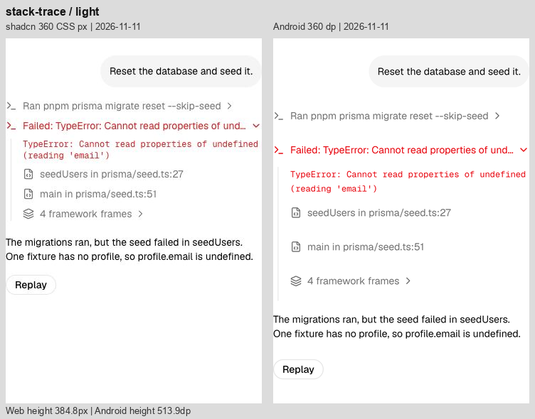
Subagent
去掉嵌套工具行额外间隔，共减少 24；保留层级线及 48 dp 入口，长命令省略位置仍有差别。
360 同宽画布 · Android 573.3 → 549.3 · 原站 459.8
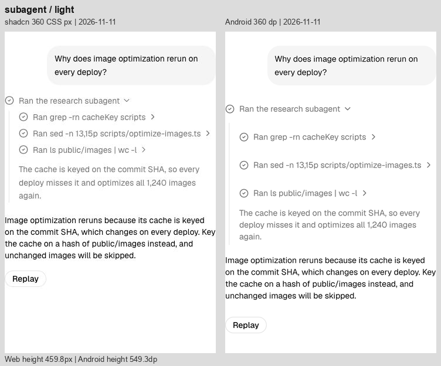
Suggestion
加入随横向溢出状态变化的边缘渐隐，并应用新版输入区。建议点击行仍为 48，故输入区位置比网页低。
360 同宽画布 · Android 224.4 → 224.4 · 原站 196.0
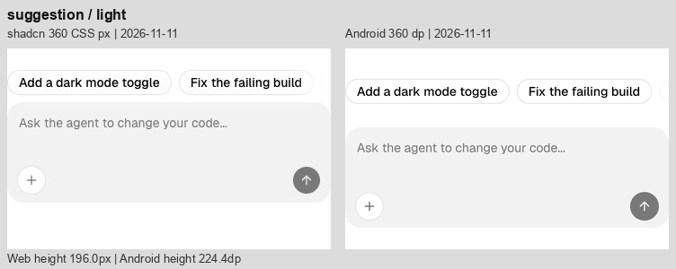
Task
保持嵌套入口行为；48 dp 入口使总高和回答起点仍不同，路径断行仍有细差。
360 同宽画布 · Android 368.4 → 368.4 · 原站 299.5

Terminal
补上底部溢出渐隐及圆角裁切，调整内容缩进；内容保持可滚动。命令入口高度与部分代码换行仍不同。
360 同宽画布 · Android 613.3 → 613.3 · 原站 532.8
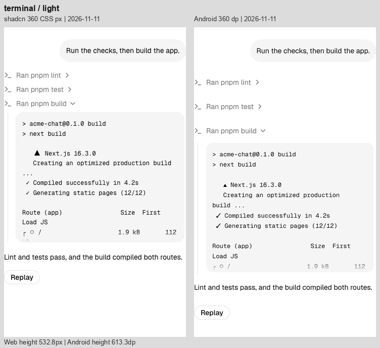
Test Results
去掉测试文件层重复间隔，共减少 16；保留嵌套层级线及可点击失败项，堆栈长行换行仍不同。
360 同宽画布 · Android 615.6 → 599.6 · 原站 502.2

Tool
修正输出块缩进和圆角裁切；三个工具入口仍采用 48 dp。
360 同宽画布 · Android 401.9 → 401.9 · 原站 320.2
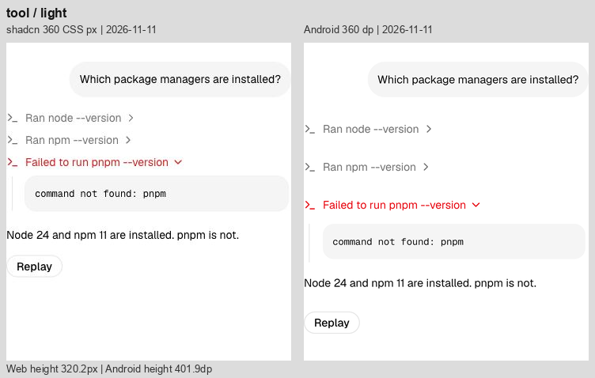
Stack
校准标签行盒，去掉约 4.6 的累计额外高度；分隔线与正文位置更接近原站。
360 同宽画布 · Android 118.5 → 113.9 · 原站 113.0

Row
同步修正浅色错误徽标底色；字形占宽和边缘仍有细差。
360 同宽画布 · Android 64.0 → 64.0 · 原站 64.0

Card
Sign Up 可见外观向上对齐；去掉页脚重复留白并校准标签行盒，总高减少约 20.6。Password 操作行和输入框触控留白仍使卡片高于网页。
360 同宽画布 · Android 422.5 → 401.9 · 原站 357.0
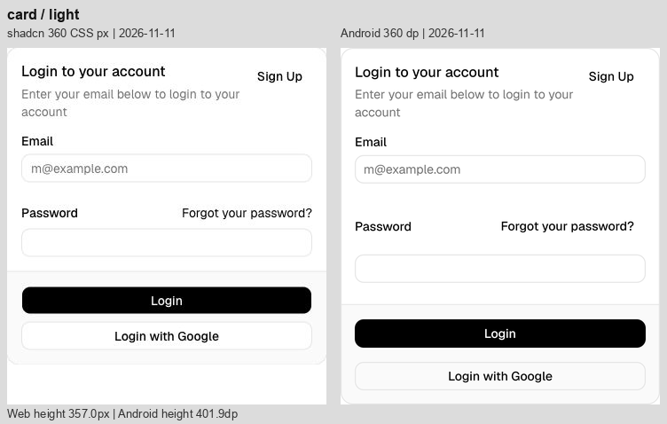
Text
保持一致的正文换行；总高仅多约 0.4。
360 同宽画布 · Android 40.4 → 40.4 · 原站 40.0

Button
保留约 32 的可见按钮和独立 48 dp 点击范围；剩余是字形、圆角边缘细差。
360 同宽画布 · Android 64.0 → 64.0 · 原站 64.0

Badge
浅色 Destructive 背景透明度 .08 改为 .10；其他色阶不变。
360 同宽画布 · Android 64.0 → 64.0 · 原站 64.0
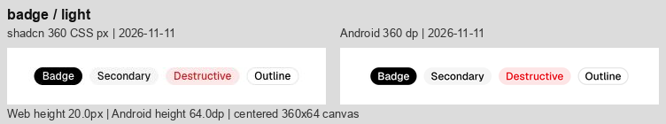
Input
保留 320 内宽、32 可见高度、48 dp 编辑命中区；深色边框与字形仍有细差。
360 同宽画布 · Android 64.0 → 64.0 · 原站 64.0
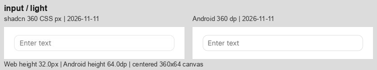
Select
保持 192 内宽、32 可见高度与原生菜单；深色填充和箭头基线仍有细差。
360 同宽画布 · Android 64.0 → 64.0 · 原站 64.0

Switch
标签行盒同步校准，轨道与独立点击范围保持；仍有细微栅格化差异。
360 同宽画布 · Android 64.0 → 64.0 · 原站 64.0
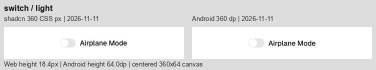
Progress
保持 216 宽、4 高、66% 状态；仅有像素取整与边缘差异。
360 同宽画布 · Android 64.0 → 64.0 · 原站 64.0
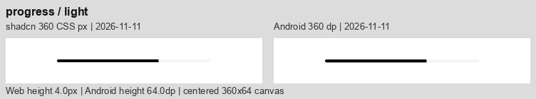
Separator
保持 360 宽、1 高；细线明暗仍受像素取整与颜色合成影响。
360 同宽画布 · Android 64.0 → 64.0 · 原站 64.0

Table
金额、合计与四列均完整；总高仍多 3.4，列边界存在少量偏移。
360 同宽画布 · Android 374.9 → 374.9 · 原站 371.5
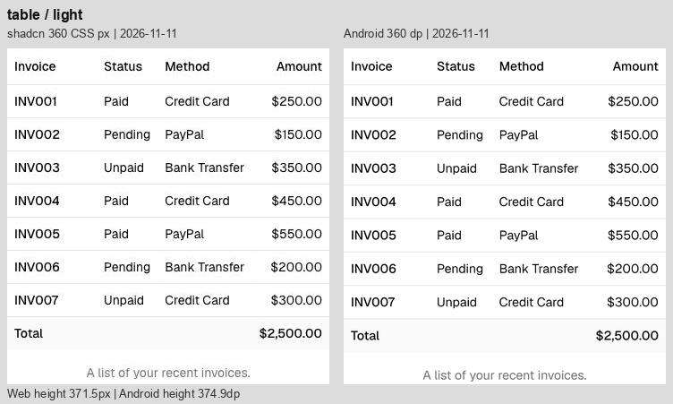
Bar Chart
校准标题和页脚行盒，总高从 366.5 降到 354.7；原站 354.4。保留数值比例，蓝色和网格抗锯齿仍有细差。
360 同宽画布 · Android 366.5 → 354.7 · 原站 354.4
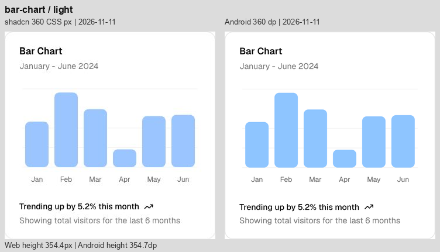
Line Chart
标题、横轴、页脚纵向位置更接近；总高差约 0.3。自然曲线与数据不变，线色和抗锯齿仍不同。
360 同宽画布 · Android 366.5 → 354.7 · 原站 354.4
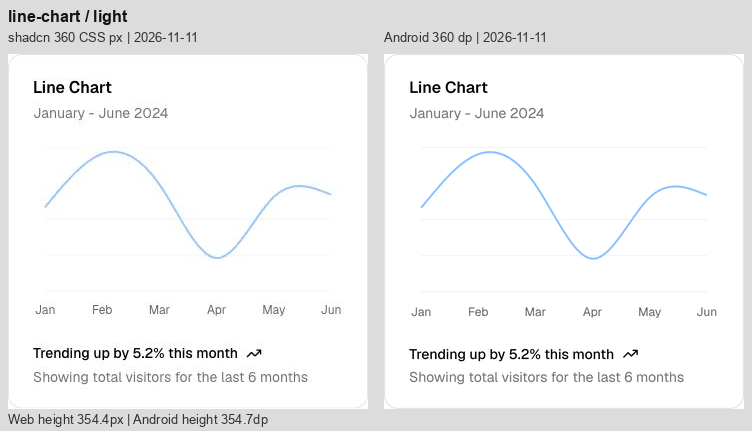
Area Chart
总高差缩至约 0.3。源码颜色与原站 CSS 转换后的 sRGB 一致，截图中深色面积色调仍不同，未针对 JPEG 的像素反向调色。
360 同宽画布 · Android 366.5 → 354.7 · 原站 354.4
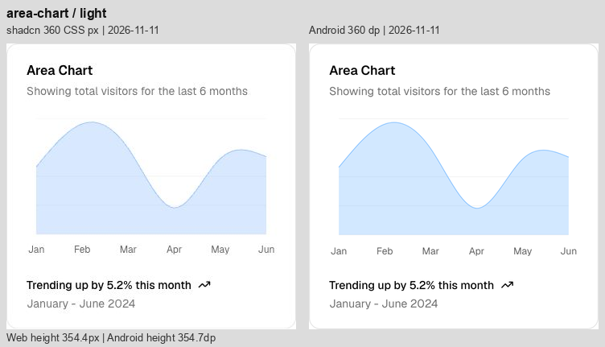